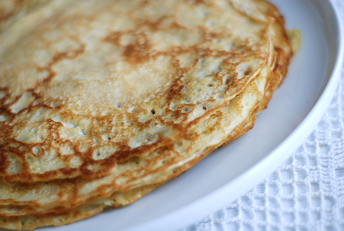

Vanaema pannkoogid ehk krepid

Lisainfo
- 4-le inimesele
- Valmistada praadides
- Valmistusaeg 30minutit
- Dessert
| Koostisosad |
Kogus |
| Muna |
4tk |
Suhkur |
60g |
| Nisujahu |
200g |
| Sool |
Näpuotsaga |
| Piim |
5dl |
| Või |
50g |
- Klopi munad suhkruga lahti, sega juurde jahu, piim ja näpuotsaga soola ning sega ühtlaseks.
- Viimasena lisa juurde sulavõi, sega läbi.
- Kuumuta suur pann, lisa sobiv kogus tainast ja küpseta paar minutit keskmisel kuumusel, kuni pannkook on altpoolt kaunilt kuldne.
- Keera ringi ja küpseta ka teiselt poolt.